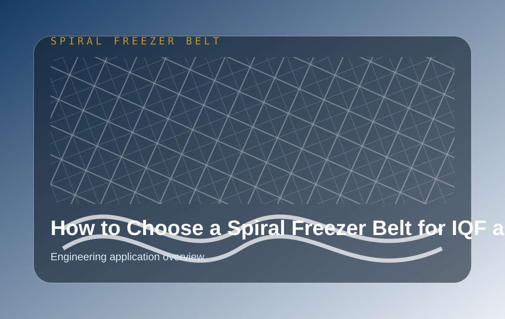
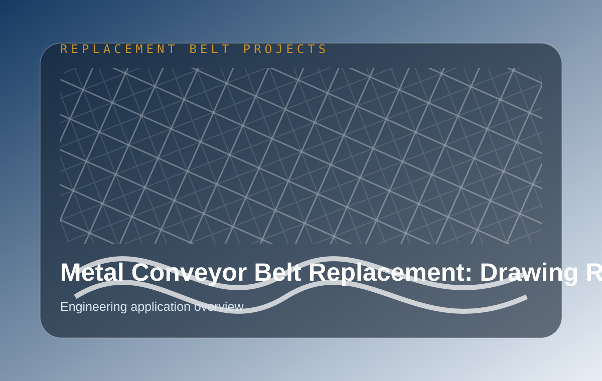

Engineering Blog for Metal Conveyor Belt Buyers
Factory-backed articles built for overseas OEM buyers, distributors, and replacement teams. Each article links search intent to product pages, engineering review, and inquiry CTAs.
What Information Should You Send Before Requesting a Metal Conveyor Belt Quote?
Buyer checklist for requesting a metal conveyor belt quote, including drawings, photos, dimensions, materials, drive details, load, temperature, and project context.
Read buyer guide ->How Do You Compare Metal Conveyor Belt Manufacturers for OEM Supply?
OEM buyer guide for comparing metal conveyor belt manufacturers by factory capability, engineering support, quality control, material control, delivery, and repeat supply.
Read buyer guide ->What Affects the Price of a Metal Conveyor Belt?
Practical guide explaining metal conveyor belt price factors, including material, belt structure, pitch, width, quantity, welding, sprockets, quality requirements, and delivery.
Read buyer guide ->When Should You Replace Conveyor Belt and Sprockets Together?
Engineering guide explaining when conveyor belts and sprockets should be replaced together, including pitch wear, tooth wear, jumping, tracking, and drive matching.
Read buyer guide ->How Can Buyers Reduce Lead Time for Replacement Metal Conveyor Belts?
Practical guide for reducing replacement metal conveyor belt lead time through better RFQ data, drawings, material confirmation, stock planning, and inspection preparation.
Read buyer guide ->How Should a Metal Conveyor Belt Be Inspected Before Shipment?
Pre-shipment inspection guide for metal conveyor belts covering dimensions, pitch, edge, welding, material, surface condition, packing, and export documentation.
Read buyer guide ->How Do You Choose Between 304 and 316 Stainless Steel Conveyor Belts?
Practical comparison of 304 and 316 stainless steel conveyor belts for food processing, seafood, washing lines, corrosion resistance, and cost decisions.
Read buyer guide ->How Do You Choose the Right Metal Conveyor Belt for Washing Lines?
Guide to choosing metal conveyor belts for washing lines, including drainage, open area, corrosion resistance, product support, cleanability, and drive matching.
Read buyer guide ->How Do You Prepare a Replacement Conveyor Belt Project Without an Original Drawing?
Step-by-step guide for preparing a replacement metal conveyor belt project when the original drawing is missing, including photos, measurements, samples, and engineering review.
Read buyer guide ->Why Does a Spiral Freezer Belt Collapse?
Troubleshooting guide explaining spiral freezer belt collapse causes, inspection photos, replacement checks, and engineering confirmation before RFQ.
Read troubleshooting guide ->Why Does a Conveyor Belt Track to One Side?
Engineering guide to conveyor belt tracking problems, including alignment, sprocket matching, tension, edge wear, and replacement inspection photos.
Read troubleshooting guide ->Why Does a Chain Driven Belt Jump on Sprockets?
Troubleshooting guide for chain driven belt jumping on sprockets, covering pitch mismatch, worn sprockets, tension, shaft alignment, and replacement checks.
Read troubleshooting guide ->Why Do Eye Link Belts Break Under Heavy Load?
Engineering troubleshooting guide for eye link belt breakage under heavy load, including rod size, link wire, sprockets, load shock, and inspection checklist.
Read troubleshooting guide ->Why Does a Flat Wire Belt Deform During Operation?
Troubleshooting guide explaining flat wire belt deformation causes, including load, temperature, edge pull, support, opening size, and material selection.
Read troubleshooting guide ->What Causes Self-Stacking Belt Failure in Spiral Freezers?
Troubleshooting guide for self-stacking belt failure in spiral freezers, covering stacking edge, side plates, pitch, load, turning path, and replacement review.
Read troubleshooting guide ->Why Do Conveyor Belts Stretch or Lose Tension?
Troubleshooting guide for conveyor belts stretching or losing tension, covering pitch elongation, load, material fatigue, sprocket wear, and tension adjustment.
Read troubleshooting guide ->Why Does a Spiral Freezer Belt Run Unstable?
Troubleshooting guide for unstable spiral freezer belt running, including tracking, tension, edge wear, drive matching, tower alignment, and inspection photos.
Read troubleshooting guide ->How to Choose a Spiral Freezer Belt for IQF Systems?
Engineering guide for choosing spiral freezer belts for IQF systems, including structure, material, drive matching, inspection points, and quote preparation.
Read article ->How to Select a Self-Stacking Belt for Spiral Freezers?
Guide to selecting self-stacking belts for spiral freezers, including stacking geometry, edge structure, load, material, quality checks, and replacement information.
Read article ->How to Choose a Flat Wire Conveyor Belt for Food Processing?
Practical guide to choosing flat wire conveyor belts for food processing, covering openings, material, edge type, load, drainage, cleanability, and quote details.
Read article ->How to Choose an Eye Link Belt for Heavy-Duty Conveying?
Eye link belt selection guide for heavy-duty conveying, covering load, pitch, link design, rods, side plates, sprockets, cleaning, and replacement review.
Read article ->How to Select a Chain Driven Belt for Industrial Systems?
Guide to selecting chain driven belts for industrial systems, including chain pitch, mesh type, sprockets, load, temperature, tracking, and replacement checks.
Read article ->What Is the Difference Between Spiral Freezer Belt and Self-Stacking Belt?
Comparison between spiral freezer belts and self-stacking belts, explaining structure, application, drive logic, replacement information, and selection criteria.
Read article ->How to Choose the Right Conveyor Belt for Baking Lines?
Bakery conveyor belt selection guide covering oven temperature, cooling, product support, airflow, material grade, belt type comparison, and quote preparation.
Read article ->How to Choose Stainless Steel Conveyor Belt Material (304 vs 316 vs 310S)?
Stainless steel conveyor belt material guide comparing 304, 316, and 310S for food processing, corrosion resistance, heat resistance, and replacement projects.
Read article ->
How to Choose a Spiral Freezer Belt for IQF and Spiral Freezing Lines
A practical engineering guide for OEM buyers and replacement teams choosing spiral freezer belts for IQF, spiral tower, and frozen food processing lines.
Read article ->Why In-House Wire Drawing Improves Metal Conveyor Belt Quality and Delivery
Learn why in-house wire drawing, raw material stock, and early material control help reduce risk for OEM and replacement metal conveyor belt projects.
Read article ->
Metal Conveyor Belt Replacement: Drawing Review Checklist Before You Request a Quote
A buyer-focused checklist for sending belt drawings, photos, dimensions, and operating conditions before requesting a replacement metal conveyor belt quote.
Read article ->Spiral Freezer Belt vs Self-Stacking Belt: What Is the Difference?
A spiral freezer belt is selected mainly for spiral tower movement, turning stability, and low-temperature conveying. A self-stacking belt is selected when the belt itself forms stacked tier...
Read article ->Flat Wire Belt vs Eye Link Belt: Which One Should You Choose?
Choose a flat wire belt when you need open area, drainage, airflow, and moderate product support. Choose an eye link belt when you need stronger load capacity, smooth support, or heavy-duty ...
Read article ->Chain Driven Belt vs Balanced Weave Belt Comparison
A chain driven belt is better when positive engagement, heavy load, and accurate tracking are required. A balanced weave belt is better for flexible conveying, airflow, heat transfer, and co...
Read article ->Stainless Steel 304 vs 316 vs 310S Conveyor Belts
304 stainless steel is the common choice for many food conveyor belts. 316 is used when corrosion resistance is more important, especially seafood, washing, or chemical cleaning. 310S is use...
Read article ->Welded Edge vs Chain Edge Conveyor Belt: Which Is Better?
A welded edge belt is useful when the belt needs a clean, compact edge and stable structure. A chain edge belt is better when positive drive, heavy load, or stronger edge guidance is require...
Read article ->Conveyor Belts for Food Processing Industry Explained
Food processing conveyor belts should be selected by product size, cleaning method, drainage, temperature, load, material grade, and drive matching. Stainless steel mesh belts are often used...
Read article ->Conveyor Belts for IQF Freezing Systems
IQF freezing belts must support low-temperature operation, stable tracking, cleanability, and correct turning or drive engagement. Spiral freezer belts and self-stacking belts are common cho...
Read article ->Conveyor Belts for Baking and Oven Lines
Baking and oven line conveyor belts should be selected by temperature, product support, airflow, belt flatness, expansion behavior, and cleaning needs. Flat wire, balanced weave, compound we...
Read article ->Conveyor Belts for Washing and Cleaning Lines
Washing line conveyor belts need open area, drainage, corrosion resistance, stable product support, and easy cleaning. Flat wire belts, eye link belts, and open-link structures are common ch...
Read article ->Conveyor Belt Solutions for Industrial Automation Systems
Industrial automation conveyor belts should be selected by load, repeatability, drive control, line speed, product support, and maintenance access. OEM projects need early drawing review, sp...
Read article ->Conveyor Belt Applications in Meat Processing Industry
Meat processing conveyor belts need hygienic surfaces, corrosion resistance, easy cleaning, stable support, and reliable replacement matching. Eye link belts, flat wire belts, and balanced w...
Read article ->Conveyor Belt Applications in Seafood Processing Systems
Seafood processing conveyor belts usually need stronger corrosion resistance, drainage, cleanability, and low-temperature stability. 316 stainless steel may be considered when salt, moisture...
Read article ->